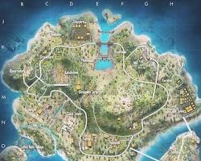

O'yin hám Turnirler galereyası
 |
Professional Turnir FinalıBul suwrette 2025-jılǵı "Global Finals 2024" turniriniń final basqıshı kórsetilgen. Final oyını júdá hayajanlı ótti, sebebi eń kúshli 12 jámáat bas sıylyq ushın gúresti. Kibersportshılar ózleriniń tezligi hám taktikası menen tamashagóylerdi hayran qaldırdı. O'yında aqırǵı zona tarayǵan sayın gúres kúsheyip bardı hám strategiyalıq sheshimler jeńis alıp keldi. |
 |
O'yın qaharmanları hám qábiletlerFree Fire o'yinında hár bir xarakterdiń ózine tán ózgeshelikleri bar. Mısalı, súwrette kórsetilgen xarakterler o'yınnıń gúres processin túp-tiykarınan ózgertiwi múmkin. Aktiv hám pasiv qábiletlerdi durıs birlestiriw (skill combination) — bul jeńistiń tiykarǵı gilti. Professional o'yinshılar hár dayım óz jámáatindegi rollarǵa qaray xarakter tańlaydı. |
 |
Eń kúshli qurallar hám uskınalarKibersport turnirlerinde qurallardan paydalanıw boyınsha óz aldına analizler ótkeriledi. AK-47, M1887 yamasa AWM sıyaqlı qurallar o'yınshılardıń eń súyikli quralları esaplanadı. Suwrette kórsetilgen uskınalar o'yinshınıń qorǵanıwın kúsheytedi. Mergenler (snayperler) jámáattı alıstan qorǵasa, shturmovikler jaqın aralıqtaǵı urıslarda tiykarǵı róldi oynaydı. Avtomatlar (AK, M4A1) Sniper quralı (AWM, Kar98) Shotgun Pistolet Granata |
 |
Jańa Karta hám StrategiyaBermuda hám Purgatory kartalarınan keyingi jańalanıwlar o'yınshılarǵa taze taktikalar qollanıw imkaniyatın berdi. Bermuda – eń mashhur karta Purgatory – tawlı hám köpirli jaylar kóp Purgatory – tawlı hám köpirli jaylar kóp |